PLANA · UX Project Manager · UX Researcher · 약 6개월
UAM · 기내 인테리어 · 풀스케일 목업
문헌 리서치에서 실물 목업까지, UAM 내장 설계의 근거를 쌓다
기존 항공기의 실측 사이즈를 UAM에 그대로 쓸 수 없다는 문제에서 출발해, 레거시 데이터와 조종사·승객 조사, 우드 목업 착석 측정으로
승객실·조종석 사이즈와 편의성 임계점을 합의해 나간 약 6개월간의 프로젝트입니다.
Role
UX Project Manager · UX Researcher
Period
2022.06 – 2022.12 (약 6개월)
Domain
UAM · eVTOL 기내 인테리어
Tools
Excel · Figma · Miro · 우드/하드 목업 · 비행 시뮬레이터 · VR
01
배경 · Background
UAM은 저고도·도심 비행이라는 새로운 운용 환경 위에서 조종사, 승객, 운영사, 버티포트, 규제가 동시에 얽히는 시스템입니다.
그 안에서 기체 내장(Interior)은 조종사의 업무 공간이자 승객이 가장 먼저 마주하는 접점이지만,
eVTOL 인테리어는 상용화 이전 단계라 참고할 수 있는 검증된 사례가 많지 않았습니다.
PLANA UX 팀에서 UX Project Manager이자 UX Researcher로서, 리서치 설계부터 인테리어 벤치마킹,
풀스케일 목업 제작과 시뮬레이터 연동까지 약 6개월간 프로젝트 전 과정에 참여했습니다.
프로젝트 범위
조종석(Cockpit)과 객실(Cabin) 내장 설계
핵심 구성요소: 도어 · 창문 · 좌석 · 공간 · 내부벽
문헌·산업·기종 리서치 기반의 설계 근거 확보
풀스케일 목업 + 시뮬레이터 연동 검토 환경 구축
비즈니스 컨텍스트
대상 기체: PLANA의 하이브리드 eVTOL 컨셉 — 6개 틸트로터, 객실 최대 6인 탑승
객실 구성: 대칭형 와이드 도어, 3점식 안전벨트와 버킷 시트, 다양한 수납 공간
객실 승무원 없이 운영되는 것을 전제로, 승객이 스스로 쓰는 기능까지 설계
팀: 디자인 리드 2 · 외장 디자인 1 · 내장 디자인 1 · 브랜드 디자인 1 · UX PM 1(본인)
기체 정보 출처: Vertical Magazine, 2023.04
Project Scope: 화면(Flypad)이 아닌 기체 공간 자체를 설계 대상으로 삼아,
도면과 문헌만으로는 판단하기 어려운 배치를 실물 크기에서 직접 확인할 수 있는 환경까지 만드는 것이 프로젝트의 범위였습니다.
02
목표 · Goal
이 프로젝트의 목표는 UAM 승객실과 조종석의 사이즈 기준을 정하는 것이었습니다. 엔지니어 관점에서 최적화된 크기와,
일반 승객이 편안하다고 느끼는 한계선(편의성 임계점)을 함께 놓고 합의하는 것이 핵심이었습니다.
Input · 근거 데이터
기존 항공기(고정익 · 회전익)의 레거시 데이터
각 기종 조종사 대상 조사
각 기종 승객 대상 조사
Output · 합의할 기준
엔지니어 관점에서 최적화된 승객실 · 조종석 사이즈
일반 승객이 느끼는 편의성 임계점
두 관점을 맞춘 합의안 (확정 수치는 대외비로 비공개)
UAM 승객실을 위한 정성 평가 가이드 제안
03
리서치 · Research
A · 이해관계자 맵 & 문헌 127편 분석
AAM(Advanced Air Mobility)을 둘러싼 이해관계자를 Miro로 8개 영역으로 구조화하고, 저널 127편을
ux · customer · report · market · vertiport/system · data 여섯 카테고리로 분류했습니다.
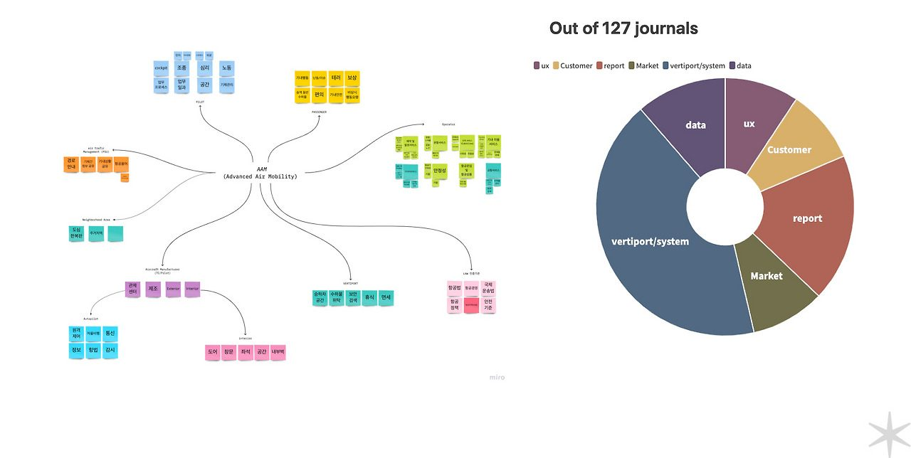
Miro 이해관계자 맵 & Out of 127 journals — 클릭하면 확대됩니다.
01
Pilot
조종사
cockpit · 조종 · 심리 · 업무 프로세스 · 공간 · 기체관리
02
Passenger
승객
기내 탑승 · 편의 · 동반 수하물 · 기내 안전 · 비상시 행동요령
03
Operator
운영사
운항 서비스 · 안전성
04
Air Traffic Mgmt
항공 교통 관리
경로 안내 · 항공 용어
05
Neighborhood
지역 사회
도심 · 주거 지역
06 · FOCUS
Aircraft Mfr.
기체 제작 (Interior)
도어 · 창문 · 좌석 · 공간 · 내부벽
07
Vertiport
버티포트
승하차 공간 · 수하물 위탁 · 보안 검색 · 휴식 · 면세
08
Law
법·규정
항공법 · 항공 정책 · 국제 운송법
분류 결과 vertiport/system 카테고리가 가장 큰 비중을 차지했고 그다음이 report였으며,
ux 카테고리는 전체의 약 1/10 수준이었습니다.
Insight: 시스템·인프라 중심의 문헌에 비해, 기체 내장을 사용자 경험 관점에서 다룬 근거는 상대적으로 부족했습니다.
내장 설계에는 문헌만으로 결론을 내리기보다 직접 비교하고 직접 만들어 보는 단계가 필요하다고 판단했습니다.
B · 글로벌 UAM 산업 맵
기체 OEM, 운영사, 부품·인프라 기업과 투자·제휴 관계를 시간 축과 함께 정리한 산업 맵을 참고해,
어떤 기체가 언제 시장에 들어오는지와 내장 설계가 경쟁하게 될 레퍼런스의 범위를 파악했습니다.
UAM 산업 생태계 맵 (참고 자료) — 출처: B. Shim, 2022.10 · 이미지를 누르면 원 저자의 LinkedIn으로 이동합니다
C · 인테리어 벤치마킹 — 30여 개 기종
eVTOL 12개 사, 헬리콥터 5개 모델, CTOL(소형·비즈니스 항공기) 14개 모델의 조종석·객실 이미지를 수집해 한 장의 벽면 보드로 정리했습니다.
eVTOL만으로는 레퍼런스가 부족한 만큼, 인접 카테고리까지 넓혀 도어 · 창문 · 좌석 · 공간 · 내부벽 다섯 축으로 비교했습니다.
리서치 방법 분류 · 붉은 박스: 정성(Qualitative) 영역 — Interviews · Focus Groups · Participatory Design · Ethnographic Field Studies
방법 분류 틀: Nielsen Norman Group (C. Rohrer)
설문조사와 인터뷰, 맥락적 조사로 사용자 데이터를 모았고, 그중 인터뷰와 실험은 두 가지 방식으로 진행했습니다.
방식 01
Depth Interview & Shadowing
조종사와 탑승객을 각각 만나 깊이 있게 묻는 심층 인터뷰와 섀도잉(관찰)으로, 요구와 사용 맥락을 정성적으로 파악했습니다.
방식 02
우드 목업 착석 측정
우드 목업에 참가자를 직접 앉히고 수치를 측정했습니다. 홍익대 학부생 24명과 임직원 약 40명이 참여했고, 측정 항목과 결과값은 대외비로 공개하지 않습니다.
조종사 인터뷰는 고정익·회전익 조종사를 각각 만나 60–90분씩 진행했고, 비행 전 → 탑승 → 이륙 → 비행 → 착륙 → 주기의 여섯 단계로 나눠
단계마다 점검·통신·조작·역할·비상 대응을 물었습니다.
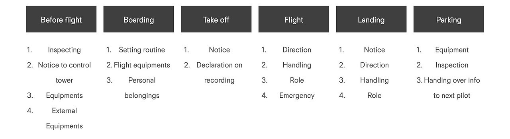
조종사 인터뷰 구조 · 고정익 & 회전익 조종사, 인터뷰당 60–90분
탑승객 설문 · 인터뷰 조사 개요
대상
미술 · 디자인 · 항공우주학(AERO)을 전공해 전문 지식이 있거나, 항공기 탑승 여행을 많이 해본 사람 — 인터뷰이 3개 그룹, 총 47명
기간
2022년 8월 17일 – 9월 2일
방법
설문조사 + Depth Interview 결합 (탑승 경험) · Shadowing
목표
UAM 승객실을 위한 정성 평가 가이드 제안 (Proposal of Qualitative Assessment Guide for UAM Passenger)
페르소나 & 저니맵
설문·인터뷰 조사(47명)를 바탕으로 탑승객을 세 가지 유형의 페르소나 — VIP 비즈니스맨 · 이벤트 인플루언서 · 아기·반려견 동반 부모 — 로 정리하고,
이들의 비행 경험을 저니맵으로 그렸습니다. 기존 항공기(As-is)와 AAM(To-be)을 나란히 놓고 무엇이 달라지는지 찾았습니다.
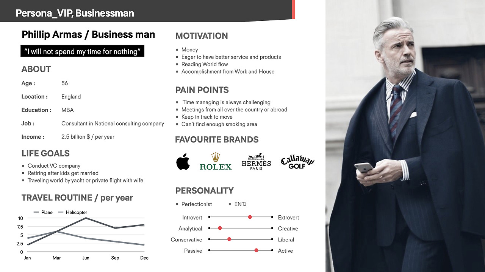
VIP · 비즈니스맨 — 56세, 컨설턴트
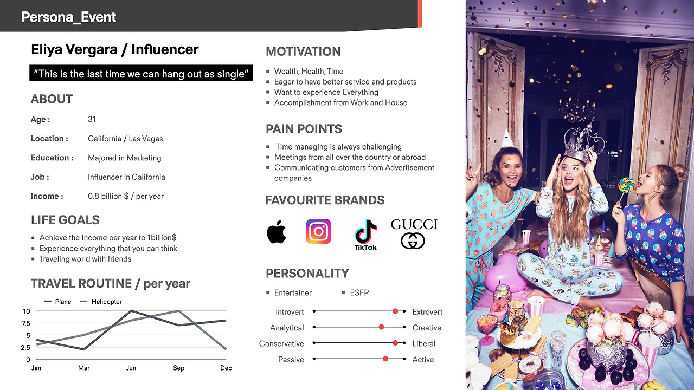
이벤트 · 인플루언서 — 31세
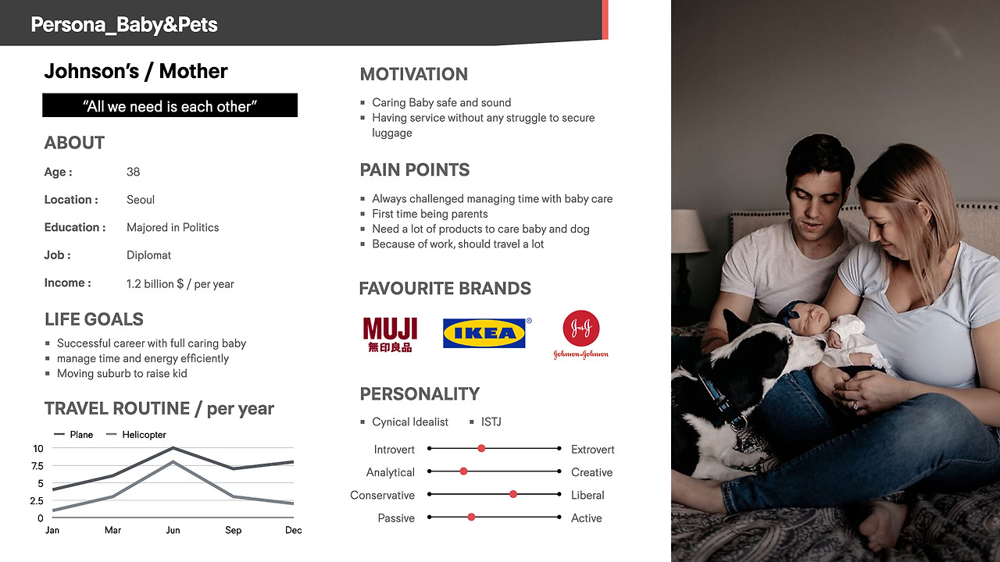
아기 & 반려견 동반 — 38세, 외교관
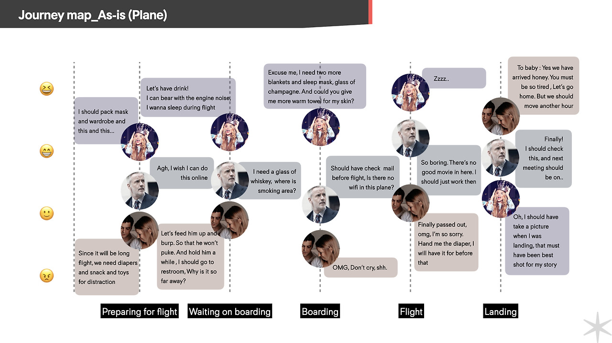
Journey Map · As-is (기존 항공기) — 짐 챙기기, 흡연 구역·와이파이 부재, 지루함, 아기 돌봄 등의 장면
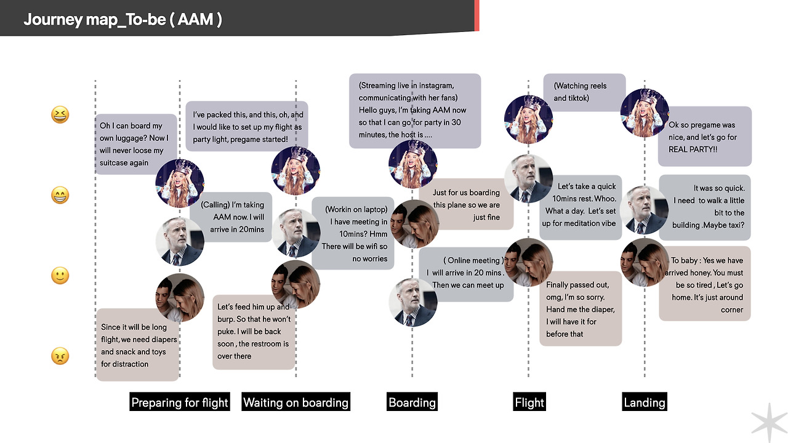
Journey Map · To-be (AAM) — 직접 짐을 싣는 탑승, 기내 업무·회의, 짧은 휴식, 도착 후 곧바로 이어지는 일정
변화 01
수하물 · 수납
짐을 부치지 않고 직접 싣고 탑승하면서, 승객 곁의 수납이 새로운 요구가 됩니다.
변화 02
업무 · 연결
As-is의 ‘와이파이 없음’이 To-be에서는 노트북 작업, 온라인 회의, 라이브 스트리밍으로 바뀝니다.
변화 03
짧은 비행 · 가족 동반
20~30분 안팎의 비행에서 휴식과 준비가 이어지고, 아기 동반 승객은 화장실·기저귀 등 가까운 서비스를 원합니다.
이 장면들을 탑승장 이동 → 보안 → 탑승 → 하차 → 목적지 이동 순서로 배열해 저니맵을 설계했습니다.
구체적 실행 단계
STEP 01
이해관계자 맵 · 문헌 분석
AAM 이해관계자 8개 영역을 구조화하고, 저널 127편을 6개 카테고리로 분류해 내장 관련 근거의 밀도를 확인
STEP 02
산업 · 기체 동향 파악
글로벌 UAM OEM·운영사·인프라 지형과 기체 출시 타임라인을 참고해 레퍼런스 범위를 설정
STEP 03
인테리어 벤치마킹
eVTOL·헬리콥터·CTOL 30여 개 기종의 조종석·객실을 도어·창문·좌석·공간·내부벽 축으로 비교
STEP 04
인테리어 적용안 정리 (Interior Application)
인터뷰와 리서치에서 나온 요구를 좌석 파티션 · 개인 데스크 · 센터 콘솔 · 수납 공간 · 레그레스트 적용안으로 정리 (시트벨트는 FAA/EASA 기준)
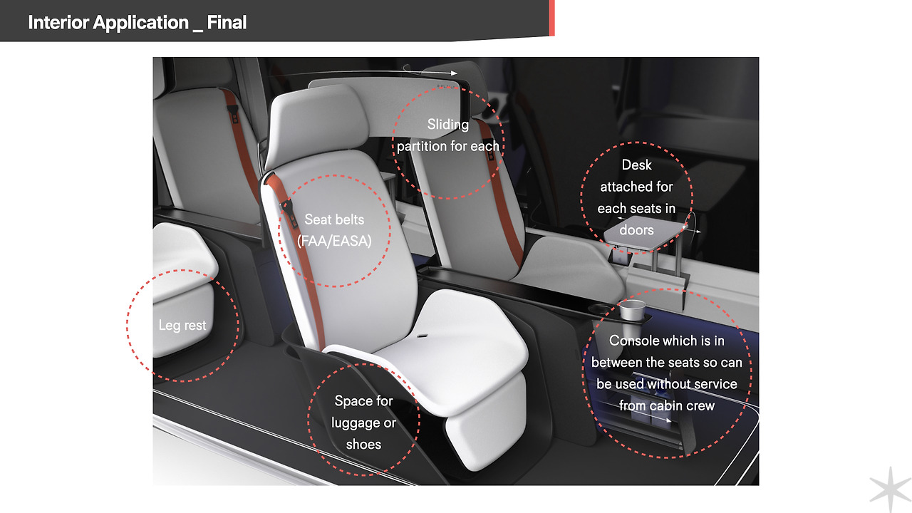
STEP 05
풀스케일 목업 제작
Fabrication Lab에서 스틸 베이스 프레임을 용접하고, 합판 리브 구조로 조종석·객실 형상을 구현
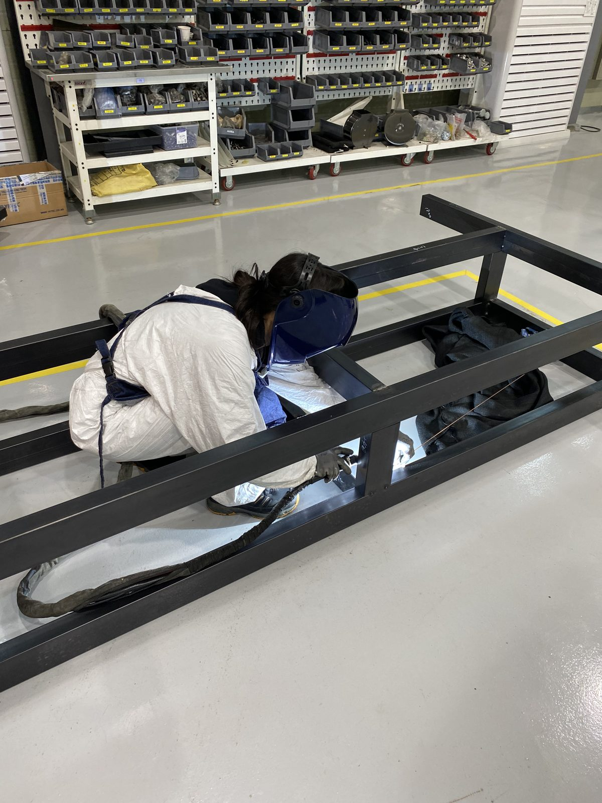
STEP 06
시뮬레이터 연동 · 리뷰
곡면 스크린 시뮬레이터와 조종석 콘솔(태블릿 계기, 조종 입력 장치)을 목업에 연결하고, 현장에서 리뷰 진행
리서치 → 인테리어 적용안
인터뷰에서 확인한 요구 — 좌석 근처에서 음료를 찾는 수요, 신발을 벗고 슬리퍼로 갈아신는 습관 — 와 벤치마킹 결과를
Interior Application (Final) 안으로 정리했습니다. 객실 승무원이 없는 운영을 전제로, 승객이 스스로 쓸 수 있는 기능에 무게를 두었습니다.
Interior Application — 좌석 단위 적용안 · 좌석별 슬라이딩 파티션 · 시트벨트(FAA/EASA) · 좌석별 데스크 · 레그레스트 · 짐·신발 공간 · 좌석 사이 콘솔(승무원 서비스 없이 이용)
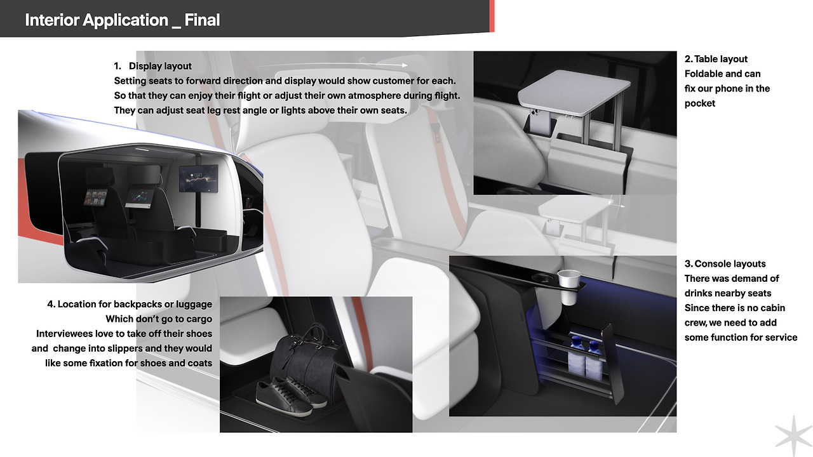
Interior Application — 4가지 적용 포인트 · 클릭하면 확대됩니다.
01
Display
좌석별 디스플레이
좌석을 전방으로 배치하고 승객마다 디스플레이 제공. 콘텐츠를 즐기거나 레그레스트 각도·좌석 위 조명으로 각자 분위기를 조절
02
Table
접이식 테이블
접어서 수납할 수 있고, 휴대폰을 꽂아 둘 수 있는 포켓 포함
03
Console
셀프 서비스 콘솔
좌석 근처 음료 수요 확인. 객실 승무원이 없으므로 승객이 직접 쓸 수 있는 서비스 기능을 콘솔에 추가
04
Storage
짐 · 신발 공간
화물칸에 싣지 않는 백팩·짐의 자리. 신발을 벗고 슬리퍼로 갈아신는 선호에 맞춰 신발·코트를 고정할 공간
Fabrication Lab — 실험용으로 제작한 목업 시험 리그 (합판 · 알루미늄 프로파일)
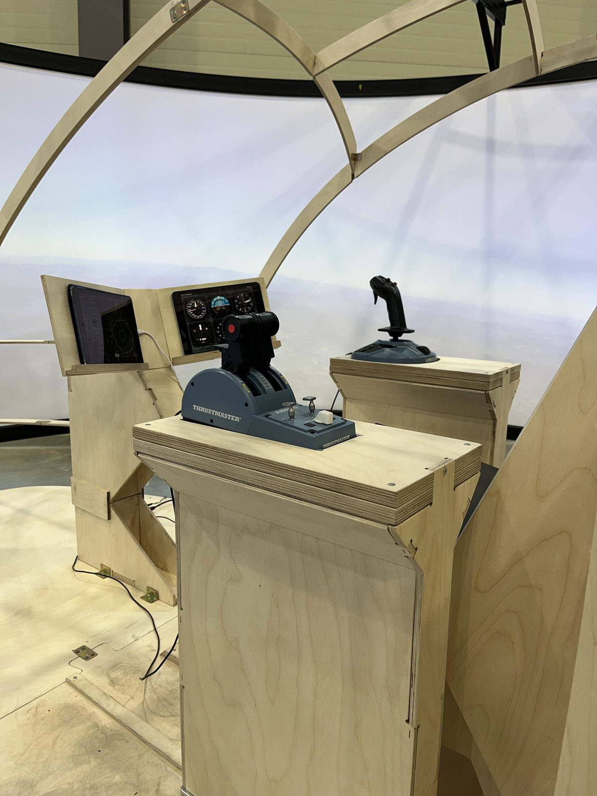
조종석 콘솔 — 좌·우 조종 입력 장치와 계기 패널
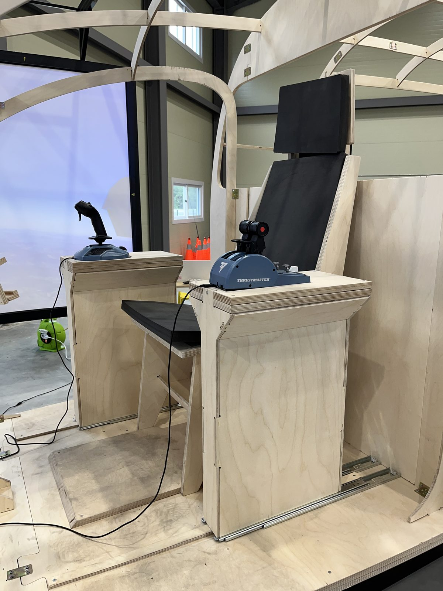
조종석 콘솔과 좌석 배치
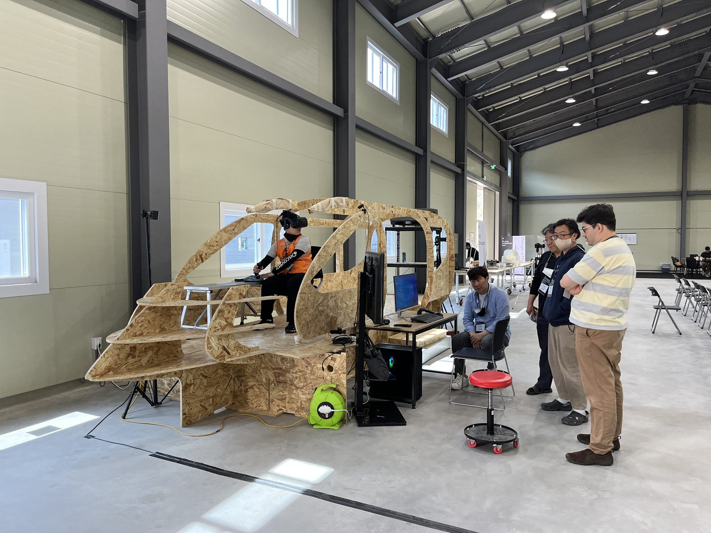
목업 리뷰 현장
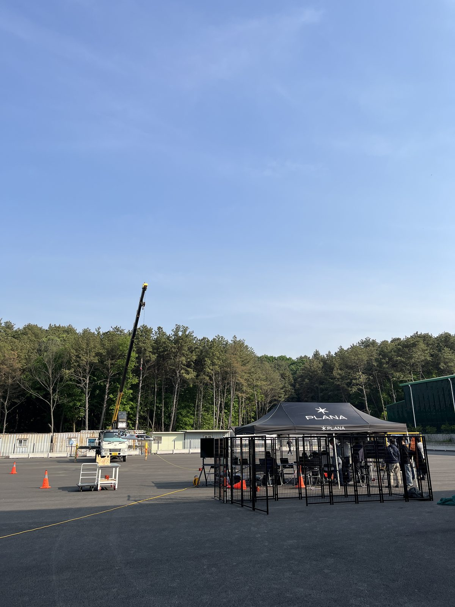
야외 현장
팀 & 협업
6
디자인 팀 (본인 포함)
6
Avionics 팀
3
조종사
24
홍익대 학부생 (HIDE Lab)
~40
내부 임직원 참여자
Design
디자인 팀
디자인 리드 2 · 외장 디자인 1 · 내장 디자인 1 · 브랜드 디자인 1 · UX PM 1(본인). 외장·내장·브랜드 디자이너는 포스터와 PDF 자료를 제작했고, 저는 UX 데이터를 추출해 내장 디자이너에게 전달했습니다.
Avionics
Avionics 팀 (6명)
조언과 데이터를 제공했고, 실험에도 직접 참여했습니다.
Pilots
조종사 (3명)
사용자 리서치에 참여해 조언을 주었고, FAA 정책 등 규제 관련 이야기도 많이 나눴습니다.
실험은 우드 목업에 참가자를 앉혀 수치를 측정하는 방식으로, 홍익대 학부생(HIDE Lab) 24명과 내부 임직원 약 40명을 대상으로 진행했습니다. 측정값은 대외비로 공개하지 않으며, 방식은 위 ‘사용자 리서치 방법’에 정리했습니다.
iF Design Award 출품
프로젝트에서 조사한 리서치와 인터뷰 결과를 인테리어 컨셉 자료로 정리해 PLANA의 iF Design Award 출품 자료에 반영했고,
이를 제출해 수상으로 이어졌습니다. 출품 보드는 배경(AAM · 버티포트 · CO₂ 비교) → 500km 데이 트립 컨셉 → 익스테리어 →
인테리어(Interior Concept, A/B details) 순으로 구성되며, 리서치에서 도출한 인테리어 근거가 마지막 설계 스토리로 연결됩니다.
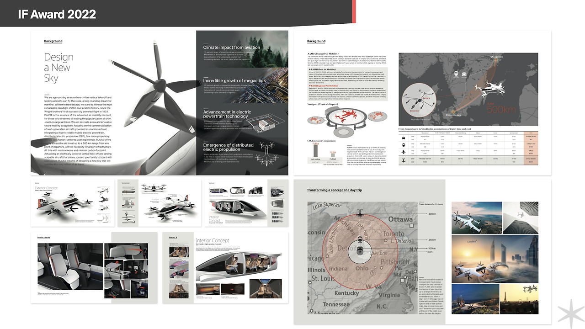
iF Design Award 출품 보드 · 2022년 겨울 출품 · 2023년 초 수상 발표
07
결과 · Results
수상
iF
iF Design Award 2023 · Professional Concept 수상 PLANA의 하이브리드 eVTOL 컨셉이 전 세계 11,000건 이상의 출품작 가운데 수상했습니다. 이 프로젝트에서 조사한 인테리어 리서치를 바탕으로 출품 자료를 구성해 제출했습니다.
출처: Vertical Magazine, 2023.04.17 (하단 관련 링크)
산출물
127
저널 분석 · 8개 이해관계자 영역으로 구조화
30+
기종 인테리어 벤치마킹 (eVTOL · 헬리콥터 · CTOL)
Full-scale
풀스케일 목업 1식 — 시뮬레이터 연동 조종석 콘솔 포함
리서치 결과물
인터뷰와 우드 목업 실험, 설문 분석을 거쳐 인테리어 적용안으로 정리했고, 이 결과가 iF Design Award 출품 자료의 인테리어 파트로 이어졌습니다.
Mental ModelJourney MapAffinity DiagramScenarioInfographic정성 평가 가이드 (제안)최종 보고서
※ 실험 측정값 등 정량 결과는 사내 대외비로 이 페이지에 공개하지 않습니다.
08
레슨런 · Lessons
L1
Physical UX는 종합 데이터 — 분류 체계가 먼저다
Physical UX는 하나의 수치가 아니라 여러 종류의 데이터가 얽힌 종합 데이터입니다. 그래서 먼저 카테고리를 정하고, 그 분류에 따라 raw data를 수집하는 방법이 필요했습니다. 이 구조가 갖춰져야 이후 데이터를 디지털화할 때 그대로 활용할 수 있습니다.
L2
주관적인 편안함을 엔지니어링 언어로 번역하기
승객이 느끼는 편의성은 정성적이지만, 설계는 치수라는 수치로 결정됩니다. 인터뷰·설문의 표현을 엔지니어가 쓰는 기준(치수·범위)으로 옮기고, 우드 목업에 실제로 앉아 보며 양쪽의 합의점을 찾았습니다. 정성 데이터도 엔지니어링 의사결정에 쓰이려면 측정 가능한 형태로 바꾸는 방법을 기초부터 터득했습니다.
L3
저해상도 실물 목업으로 먼저 측정하고, 정밀 제작은 나중에
도면과 문헌만으로는 승객이 실제로 느끼는 공간을 알 수 없어, 먼저 우드 목업에 앉아 보는 측정으로 범위를 좁혔습니다. 싸고 빠르게 확인한 뒤 하드 목업으로 넘어가면, 정밀한 제작에 들어가기 전에 잘못된 가정을 일찍 걸러낼 수 있습니다.